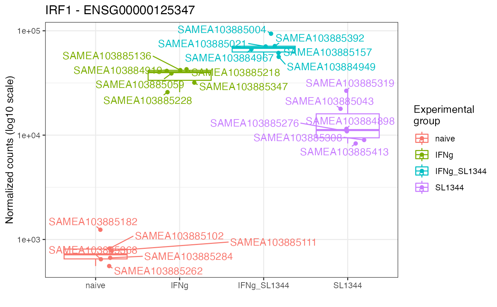

Plot expression values (e.g. normalized counts) for a gene of interest, grouped by experimental group(s) of interest
gene_plot(
dds,
gene,
intgroup = "condition",
assay = "counts",
annotation_obj = NULL,
normalized = TRUE,
transform = TRUE,
labels_display = TRUE,
labels_repel = TRUE,
plot_type = "auto",
return_data = FALSE,
gtl = NULL
)A DESeqDataSet object, normally obtained after running your data
through the DESeq2 framework.
Character, specifies the identifier of the feature (gene) to be plotted
A character vector of names in colData(dds) to use for grouping.
Note: the vector components should be categorical variables.
Character, specifies with assay of the dds object to use for
reading out the expression values. Defaults to "counts".
A data.frame object with the feature annotation
information, with at least two columns, gene_id and gene_name.
Logical value, whether the expression values should be
normalized by their size factor. Defaults to TRUE, applies when assay is
"counts"
Logical value, corresponding whether to have log scale y-axis or not. Defaults to TRUE.
Logical value. Whether to display the labels of samples, defaults to TRUE.
Logical value. Whether to use ggrepel's functions to
place labels; defaults to TRUE
Character, one of "auto", "jitteronly", "boxplot", "violin",
or "sina". Defines the type of geom_ to be used for plotting. Defaults to
auto, which in turn chooses one of the layers according to the number of
samples in the smallest group defined via intgroup
Logical, whether the function should just return the data.frame of expression values and covariates for custom plotting. Defaults to FALSE.
A GeneTonic-list object, containing in its slots the arguments
specified above: dds, res_de, res_enrich, and annotation_obj - the names
of the list must be specified following the content they are expecting
A ggplot object
The result of this function can be fed directly to plotly::ggplotly()
for interactive visualization, instead of the static ggplot viz.
library("macrophage")
library("DESeq2")
library("org.Hs.eg.db")
# dds object
data("gse", package = "macrophage")
dds_macrophage <- DESeqDataSet(gse, design = ~ line + condition)
#> using counts and average transcript lengths from tximeta
rownames(dds_macrophage) <- substr(rownames(dds_macrophage), 1, 15)
dds_macrophage <- estimateSizeFactors(dds_macrophage)
#> using 'avgTxLength' from assays(dds), correcting for library size
# annotation object
anno_df <- data.frame(
gene_id = rownames(dds_macrophage),
gene_name = mapIds(org.Hs.eg.db,
keys = rownames(dds_macrophage),
column = "SYMBOL",
keytype = "ENSEMBL"
),
stringsAsFactors = FALSE,
row.names = rownames(dds_macrophage)
)
#> 'select()' returned 1:many mapping between keys and columns
gene_plot(dds_macrophage,
gene = "ENSG00000125347",
intgroup = "condition",
annotation_obj = anno_df
)
